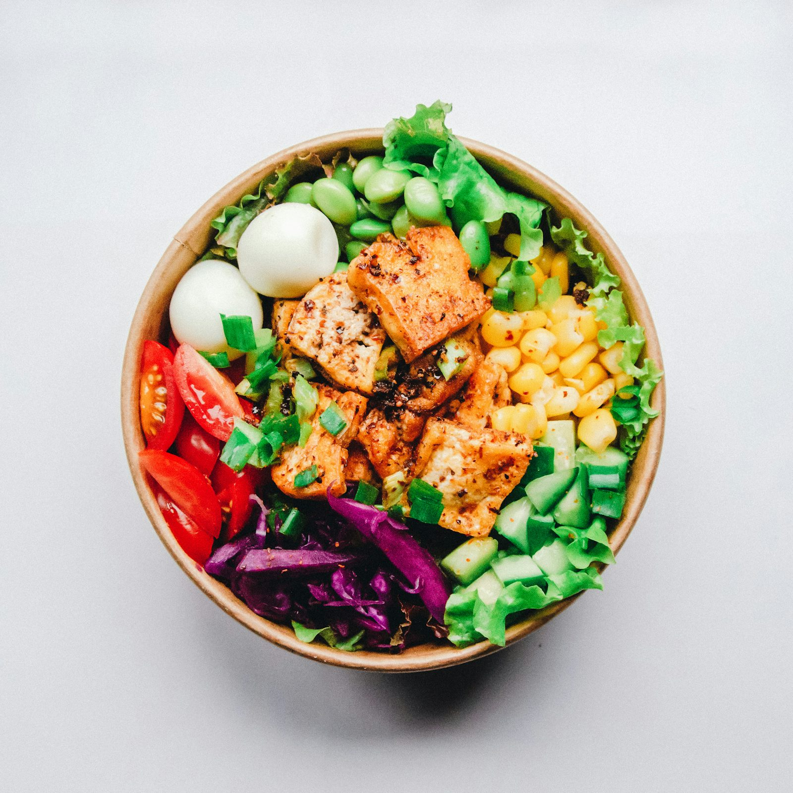
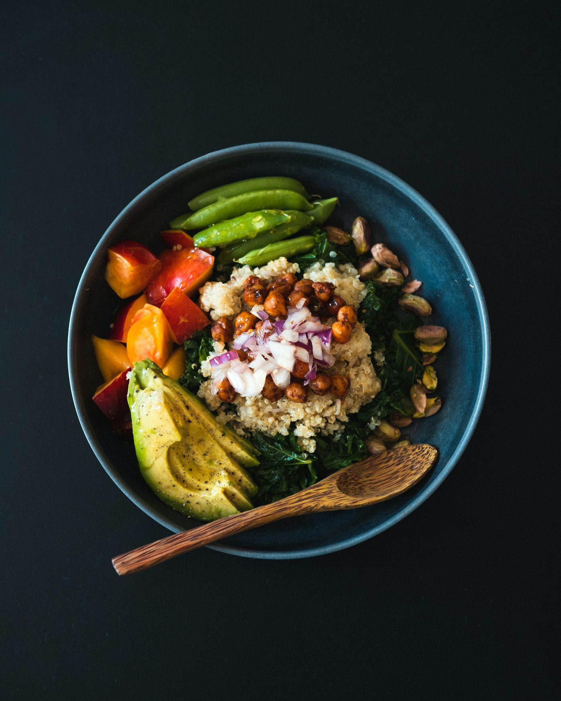
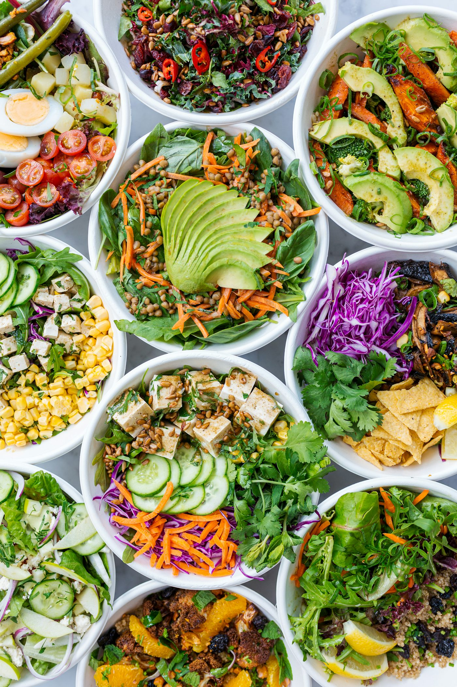

Como manter a dieta?
Manter a dieta não precisa ser sofrimento. Com pequenas escolhas no dia a dia, dá para seguir o plano com leveza, foco e resultados consistentes.
Voltar para o blog
1. Monte um plano simples
Evite metas complexas. Defina horários e refeições-base que você consegue cumprir na rotina real, sem prometer o que não dá para fazer.


2. Organize o ambiente
O que está à vista influencia suas escolhas. Deixe frutas, castanhas e água por perto e esconda o que costuma te tirar do foco.
3. Tenha lanches estratégicos
Leve opções práticas para não depender de ultraprocessados. Iogurte natural, frutas, oleaginosas e sanduíches simples resolvem.
4. Cuide do sono e da hidratação
Pouco sono aumenta a fome e reduz a disposição. Além disso, água ajuda no controle do apetite e melhora o metabolismo.
5. Flexibilidade sem culpa
Um deslize não estraga o processo. Retome na próxima refeição e siga o plano com constância, não com perfeição.